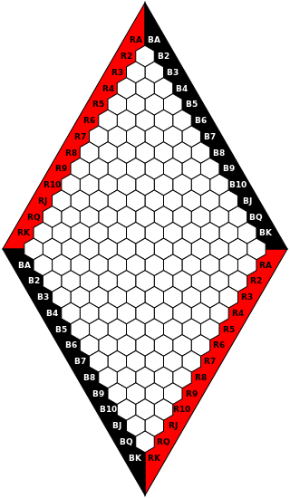
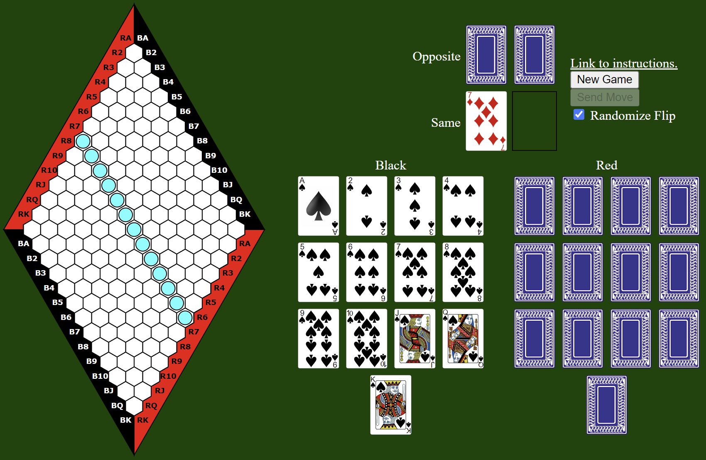
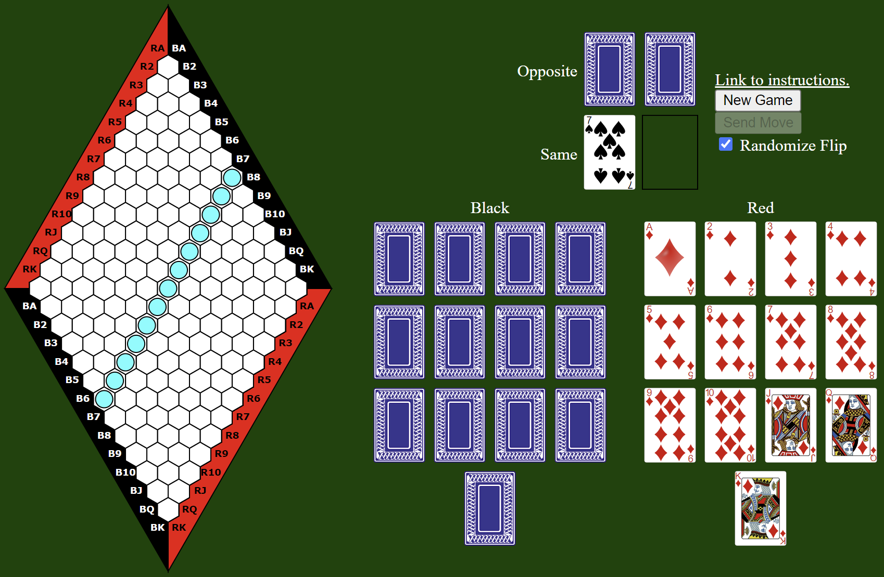
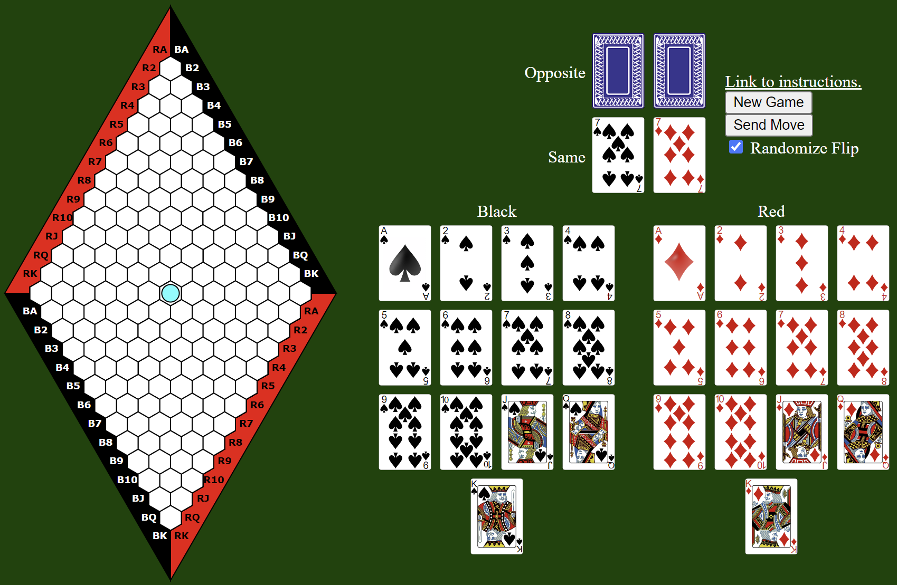
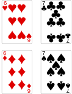
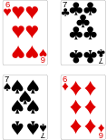
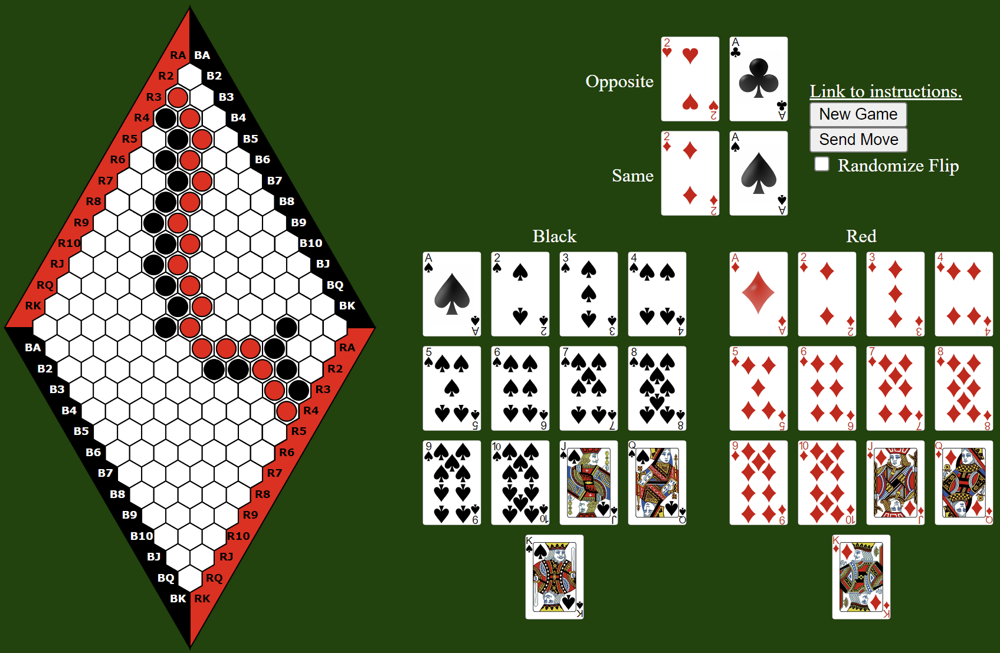

Battle Hex is a mathematically based game based on the game of Hex. Like Hex, the game cannot end in a draw. Unlike Hex, there is no winning strategy for the first player or the second player (I don't think so anyway. I'm not a mathematician, so I don't know how to prove it right now). Therefore, winning in Battle Hex is solely dependent on the player's skill and knowledge of the game.
I have included an online version of the game to demonstrate gameplay. However, Battle Hex is intended to be a two-player game. The online version of the game plays more like a version of Battle Hex solitaire, which was not the point of development. As a tabletop game, Battle Hex brings in the elements of competition, anticipation, and frustration or relief depending on whether you win or lose a tiebreaking event.
While Battle Hex is based on Hex, it's gameplay and strategy are fundamentally different. However, to describe that is to unleash the mystique of the game to a public in raging anticipation of its release. I mean, there are cards and battles! What more can you ask for?

The Battle Hex board is a diamond shaped board tiled in hexagonal cells. Two players, red and black, are assigned opposite sides of the board to make a connection. The red player's goal is to form a connection from the upper left to lower right. The black player's goal is to form a connection from the lower left to the upper right. The board is empty at the start of the game, but the players play pieces two at a time until a connection is formed.
Each player uses a set of cards to indicate their move, with each card representing a line of cells on the board. Red cards represent a line going from upper left to lower right, and black cards represent a line from lower left to upper right. The player's move is the intersection of those lines.
In the event that players indicate moves in the same cell of the board, a tiebreaker will be held. In the tiebreaking event, red will try to match the color of the cards to their opponent, while black will try to place the color of the cards opposite of their opponent. The side who wins the tiebreaking event gets to play their piece on the contested cell. The other side then gets to play their piece anywhere else on the board so that player pieces are even.
The goal for each player is to establish an unbroken chain of playing pieces of their own color going from one border to the other marked by the same color.
The players start play using an empty board. They indicate their move using two cards from a playing deck of 26 cards. The cards are ordered from ace, 2, 3, 4, 5, 6, 7, 8, 9, 10, jack, queen, king. In addition, each player has a set of 13 cards in red and black. These represent lines of cells.

Move by Red (Same) player indicating R7 (red 7)

Move by Red (Same) player indicating B7 (black 7)
The red card represent a line of cells going from upper left to lower right, and the black cards represent a line of cells going from lower left to upper right.

Move by Red (Same) player indicating R7, B7 (red 7, black 7)
The player's move is the intersection of those cards.
When the players move, they first place their cards face down on the table. When both players are ready, the players' moves are shown simultaneously. If the cards indicate different moves for both players, the players' pieces may be placed on the board without contest. If the cards indicate the same move for both players, a tiebreaking event will be held.
In the tiebreaking event, red will try to match the color of the cards to their opponent, while black will try to place the color of the cards opposite of their opponent. If the colors of the cards match, red will proceed to place their piece on the tile indicated by the move, and black will choose any other open tile. If the colors of the cards are opposite of each other, black will proceed to place their piece on the tile indicated by the move, and red will choose any other open tile.

Tiebreaker, Same (Red wins)

Tiebreaker, Opposite (Black wins)
In the figures above, the upper image depicts both moving to “Red 6, Black 7.” However, in this tiebreaker, the red player (Same) takes the cell, and black moves anywhere else on the board. In the lower image, the move is again to “Red 6, Black 7,” but the black player (Opposite) takes the cell, and red moves anywhere else on the board.
In the event that a player indicates a move on a tile that has already been occupied, that player will forfeit their move.

Winning game where Red wins.
The game is won when one color or the other is able to form an unbroken chain of pieces from one side to the other between the borders of the same color. In the figure above, red wins because they were able to build an unbroken chain of red pieces adjacent to each other from the upper left red border to the lower right red border. Note that the last move was a tiebreaker, where the Red (Same) player won the tiebreaker to R2 BA (red 2 black Ace).
On the online version of Battle Hex, you may want to ensure that the "Randomize Flip" checkbox is checked to ensure a random choice between red as your left indicator card and black as your right indicator card or black as your left indicator card and red as your right indicator card.
Battle Hex is derived from Hex, which is a game invented by Piet Hein and John Nash in 1942. Like Hex, Battle Hex is a strategy game involving 2 players and played on a hexagonal grid.
While Hex is largely fair based on the existing rules, there is a winning strategy for the first player. To balance this, the swap rule is implemented, where the first player makes a move, and the second player chooses to assume the move or not.
However, there is the possibility that there is a winning strategy exists for the first or second player based on the move made.
The game of Battle Hex aims to mitigate this flaw by imposing simultaneous moves and a protocol to resolve conflicting moves when both players move to the same cell.